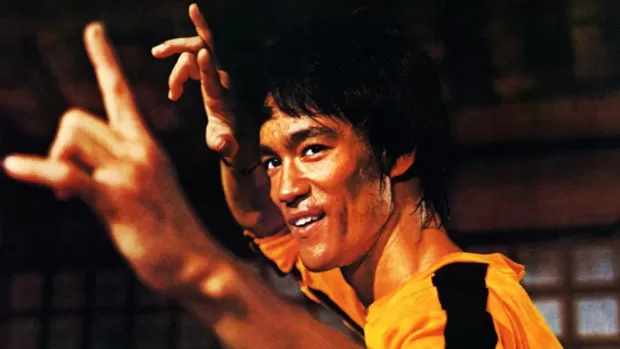

Bruce Lee
O que você sabe não tem valor; o valor está no que você faz com o que sabe.
Bruce Lee (1940-1973) foi um lutador de artes marciais, ator e roteirista norte-americano. Foi o responsável por levar as artes marciais para as telas do cinema na década de 1970. Sua morte prematura o tornou uma lenda do esporte. Bruce Lee nasceu em São Francisco, Califórnia, Estados Unidos, no dia 27 de novembro de 1940, na hora e ano do dragão, segundo a astrologia chinesa, que denotava forte presságio de homem poderoso. Filho de integrantes da Ópera Chinesa, nasceu durante em turnê do grupo pelos Estados Unidos. Lee Juan Fann, seu nome de nascimento, recebeu da médica do hospital onde nasceu, o nome Bruce.
Filmes
- Operação Dragão
- O Dragão Chinês
- O Vôo do Dragão
- A Fúria do Dragão